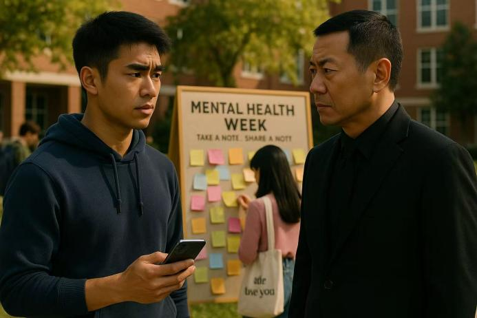

The mysterious figure Lorre appears and has a calm yet psychologically oppressive conversation with Jack, demonstrating her intention to observe and evaluate.
Jack reports the emotional disturbances to the school authority, prompting institutional intervention.
Jack began to imitate Lorre's calm posture to shoot psychoanalysis videos
Jack chose to stay away from him and focus on the record wall itself